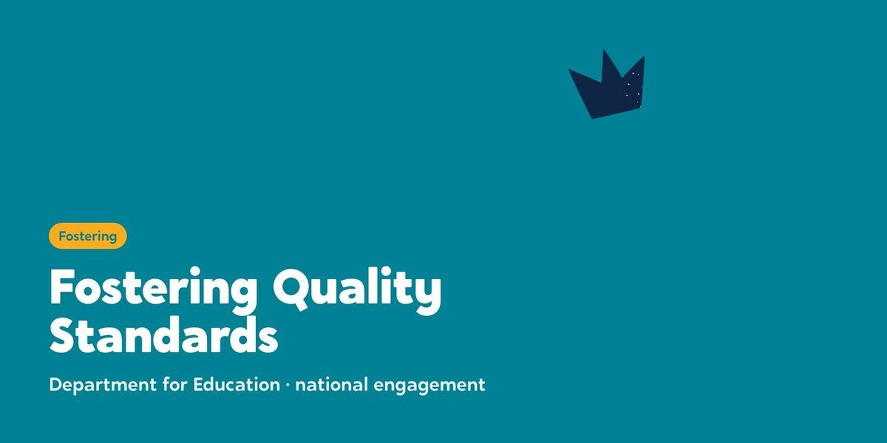

n
nDepartment for Education: Fostering Quality Standards engagement
The national standards for fostering in England were being rewritten for the first time since 2011. We ran and delivered the national engagement on the draft, taking it to the people who will live and work with it: foster carers, kinship carers, children and young people, parents, social workers, panels and fostering services. Niketa Sanderson-Gillard of Why Care was lead drafter of the standards.

The starting point
The Fostering Services National Minimum Standards had not been revised since 2011. The Department for Education drafted a new set, the Fostering Quality Standards: seven standards in place of thirty one, four documents brought into one, and every standard opening with what it means for children. The draft went out to public consultation in July 2026.
A consultation form only reaches people who already know it exists. The Department wanted the draft in front of the people who would live with it, in rooms where they could say what they really thought. That is the work we led, with Luke Rodgers BEM as engagement lead. Luke grew up in care and has spent his career changing the services that shape it, as a consultant, a keynote speaker and a former Knowledge Equity Fellow at the University of Oxford.
What we heard
Nobody asked us to keep the old standards, and the direction of the draft was supported across every group we met. Foster carers told us the rules they live with often get in the way of the ordinary family life children need.
“I think the national minimum standards do stop us living ordinary family life.”
The single message we heard most consistently was that the document is not the problem: the new standards will succeed or fail on how services put them into practice.
What we did
- JulyNine regional meetingsOne online meeting for each English region in the first week of the consultation, reaching 139 fostering leads and directors from 87 authorities
- July to SeptemberLocal authority deep divesFourteen full days inside fostering services, covering eighteen authorities, with parallel sessions for foster carers, kinship carers, children and young people, social workers, panels, reviewing officers, designated officers and senior leaders
- ThroughoutSessions with everyone elseRegional partnerships and hubs, independent fostering agencies, national charities, virtual school heads, carer associations and partner events, plus written submissions
- SeptemberA closing roundtableNational organisations and a foster carer at the Department, five days after the consultation closed
- SeptemberThe engagement reportOne report to the Department, with a register of every session and a handover pack of the evidence behind it
How we worked
Go to people: we spent full days inside services rather than asking busy carers and workers to come to us. Hear every voice in its own room: carers, children, parents and professionals each had their own space, so nobody had to speak over anyone else. Write it up the same way every time: every session was recorded against the same questions by the facilitator who was there. Report only what people said: facilitator explanation and Department framing were kept out, quotes are verbatim, and no child, carer or parent is named.
What it gave the Department
The voices of around 868 people, from every English region, in front of the people writing the standards.
The final engagement report set out what the sector supports, where it wants the draft to go further, where views differ, and what services asked for next. Every figure in it can be traced back to a session in the register.
See the work
Open any piece to look through it.
The people who live with the standards
The people who work with them
Fourteen days, eighteen authorities
Kent, Norfolk, Derby, Essex, Solihull, Rutland, Sheffield, the Tri-borough, the Isle of Wight, West Sussex, Durham, North East Lincolnshire, Manchester and the Black Country.
Deep dive days were held in eight of the nine English regions, with the ninth represented through the regional meeting and the regional virtual school.
“We’re professionals. Invite us. We’re just as good as everybody else.”
A foster carer, on the duty to invite carers to meetings about the children they look after.
“It’s so good to know who is responsible for what.”
Children’s social workers, Manchester, on the draft setting out what services and carers each do.
“If you love the child, you have to love where they come from.”